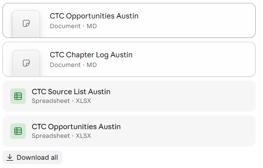
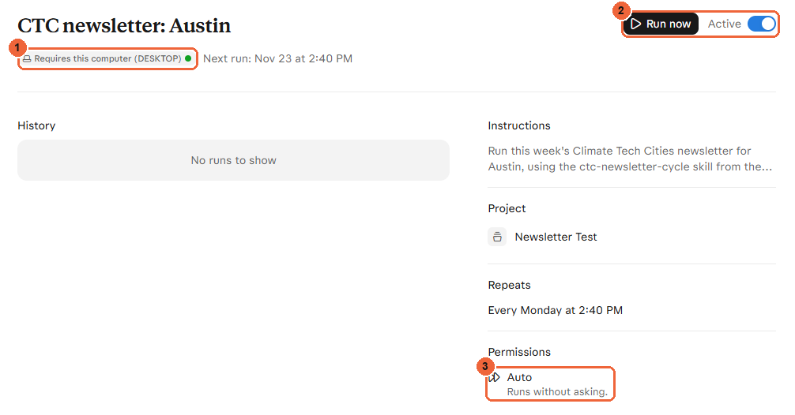
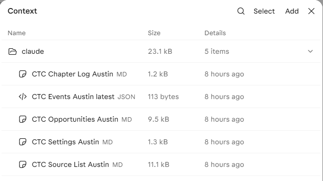

Step 3 of 4, once
Your first run
One sitting. Claude asks its questions, builds your two lists, and stops once for you to read the source list.
The same words start every week after this. The first time, Claude sees there are no chapter files yet and sets the chapter up before anything else.
-
Answer eight questions in one reply
All eight arrive together, each with its default. Skip any and Claude takes the default and tells you which. Every chapter starts weekly, so how often is not asked. If your city is already in the prompt, Claude fills it in and asks the other seven.
- Which city?Becomes your chapter name, Climate Tech [City].
- Your name?Goes on every issue as the sender. Email from a person gets opened.
- Which day to send?Pick one and never move it. No view? Tuesday or Wednesday.
- Which events count as local?The sentence every weekly run uses to decide what belongs. Default: the city plus anywhere a subscriber would travel on a weeknight.
- Which web address?Chapters use two patterns and there is no published rule. The one question with no default: recorded, and flagged to confirm with the CTC team.
- How to close each issue?Default: [your first name] and the Climate Tech [City] team.
- Timezone?It offers the obvious one. You confirm.
- Anything unusual about your city?Optional. A second cluster, a university that owns the calendar, a season when everything stops.
Claude saves your settings to the project and hands you a launch plan with your dates in it. You do not move either file anywhere.
-
Answer one more message
Straight after the settings, Claude asks for everything else it needs in a single message. Nothing here is asked again.
- Your calendars and programsPaste any event calendars you already check and any grants or programs you already know. Or say "go" and Claude researches both from scratch.
- Your writing, optionalPaste three to five things you wrote: past notes, LinkedIn posts, emails to a group. Claude learns how you write and drafts the personal parts of each issue to match.
- Three yes or no questionsMay Claude use your browser to read Luma and Eventbrite each week? May it read your LinkedIn feed once a month for programs your network is posting about? Should the newsletter start by itself each week?
No to any of the three is fine. Skipped the writing samples? Say "learn my writing style" whenever you like.
-
Read your source list before it is saved
Claude builds the source list, then the opportunities list, without stopping between them. Then it stops once and hands you both as spreadsheets, with a calendar of when everything runs from here.

The one stop, from a real first run for Austin. The two spreadsheets at the bottom are yours to read. The text files above them are the copies Claude keeps. The source list is every place events get announced in your city. Each week's events come only from what is on it, so this is the one file you approve. You live there and the research does not: name the meetup everyone goes to that is missing, and the calendar that looks dead to you. Claude checks what you add, drops what you drop, and saves the list when you say it looks right.
- Claude searches nine kinds of source, from Luma and Eventbrite to universities, city government, professional groups and arts venues
- It aims for 25 to 30 checked sources and never pads. Under 25, it names the kinds that came up empty
- A source that failed a check is named, not dropped quietly
- One row is in every chapter's list: the Climate Tech Cities event submission form, which readers use to send you events
What you get back
Source Name URL Platform Method Tier Category Cadence Last Event Confidence Origin Notes CTC event submissions (all chapters) airtable.com/… airtable auto core submissions continuous 2026-08-04 verified ctc Standing row in every source list. Never delete Portland Climate Tech Collective luma.com/… luma auto core luma 2 to 4 events a month 2026-08-04 verified user Lead already followed this PSU Institute for Sustainable Solutions example.edu/… web auto core university weekly Sep to Jun 2026-06-11 verified research Empty in July and August. Term break, not death Three rows of the source list. Fictional Portland chapter.
White row: checked, read every week Pale yellow row: not checked, kept with a note saying why. Look at it yourself Red cell: a required detail is missing, named in the Missing Info columnYour calendar
One page showing the day Claude collects events each week, your send day, and the weeks your opportunities and source list come up for a refresh. Say "show my calendar" to get it again. Claude sends a new one if your send day changes.
What you get back
Your opportunities list
Grants, fellowships, accelerators and open calls, saved as soon as its checks pass. Each issue features two to four.
- At least 15 open after every refresh, most local first
- Rolling programs count and are listed as Rolling. A deadline is never guessed
- Anything past its deadline moves to Closed
-
Your first issue
Once the source list is saved, Claude collects the week's events and sends you the review message. From here it is a normal week: reply once, rewrite three blocks, send.
A first issue should look small. New York's launch issue carried three events and a long personal note about why the newsletter existed.To send it you need the Substack from step 1. When you have the login, three things Claude can help with, each asked in your project:
walk me through Substack setupdraft my welcome emailhow do I build my list, before you import subscribers from anywhere. There are consent rules, stricter in the UK and EU
-
If you said yes to the schedule
After your first issue is built, Claude creates one scheduled task on your account, named CTC newsletter: [your city]. It runs once a week, the day before your send day: it collects the events and leaves the review message waiting for you. It never builds or sends anything by itself.
Your computer has to be on with Claude open when it runs. The event calendars are read through your browser. If it cannot reach one, it collects nothing and tells you in one short message. When you are back, press Run now on the task or say "run the newsletter".
The task Claude created, under Scheduled in Claude. 1 It needs this computer. 2 Run it now, or switch it off. 3 Auto means it runs without stopping to ask you.
The files Claude keeps
All of them live in your project. Claude saves and updates them, so you never upload, replace or carry one. Tell Claude what to change and it changes the file.

A sixth file, CTC_Events_[City]_latest.json, holds the week's events while a review is waiting, so you can reply the next day or in a new chat.